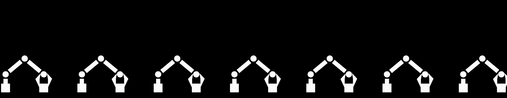

An album inspired by the pure hyperelaxation that comes with laying down with the rain. Each track was made with care to capture a specific element of this idea to coalesce into one immersive experience. Starting from a place of safety, we begin an adventure through the mind, and at the end face the greatest fear: the unknown...
I spent 3 months over the summer of 2021 making a 3 track EP that was inspired by my favorite artists and music videos at that time. This EP flows between genres and mixed all the crazy ideas that come to mind while im producing and rendering.

Synthwave jams that keeps a mechanical Midtempo beat. Video is inspired by a unique combination of a twist on stereotypical synthwave visuals, mixed with transitions and composition from "Bad Apple"
The title track of the EP, draws ideas from artists like Carpenter Burt, Creo, and Ghost Data to create a multi-genre experience that flows between 3 different styles with ambient and synthwavey interludes

A "Remix" of the sounds from one of my favorite games "Thumper"
I always admired how the game uses sound to create such an insanely immersive experience, so I dug up and sorted all the (over 1000) sound files, and used them to make a solid remix that took a unique take on the game's soundtrack
Thirty minutes of ambience based on various aspects of night. While it is one full piece, because of its length, it is split into various parts, each with their own unique ideas and themes.
A Dark Ambient track that captures the feeling of falling forever
In California, the wildfires in 2020 created an ominous red-orange hue over the skies of San Francisco. After seeing some drone footage (and being in a dystopian mood) I created this mesh of traditional orchestration with varied synthscapes to create ambience that fits the atmosphere... literally
The goal I had while making this track was to focus on vocal chops to a point where they almost feel like percussion in a way... it's a bit hard to describe so just take a listen. This is probably the most effort put into a track and video, and definitely one of my favorites.
A Synthwave/Electro song with some bits of Psystyle and Ambience
Although slightly more generic than a lot of other tracks, Pattern still is very catchy and has some good synth leads, especially @3:37.
These are just the tracks I think deserve the spotlight, if you want to listen to everything I've ever released, (even the really really bad ones) you can find it all on Newgrounds, or you can find just the tracks that have videos on Youtube